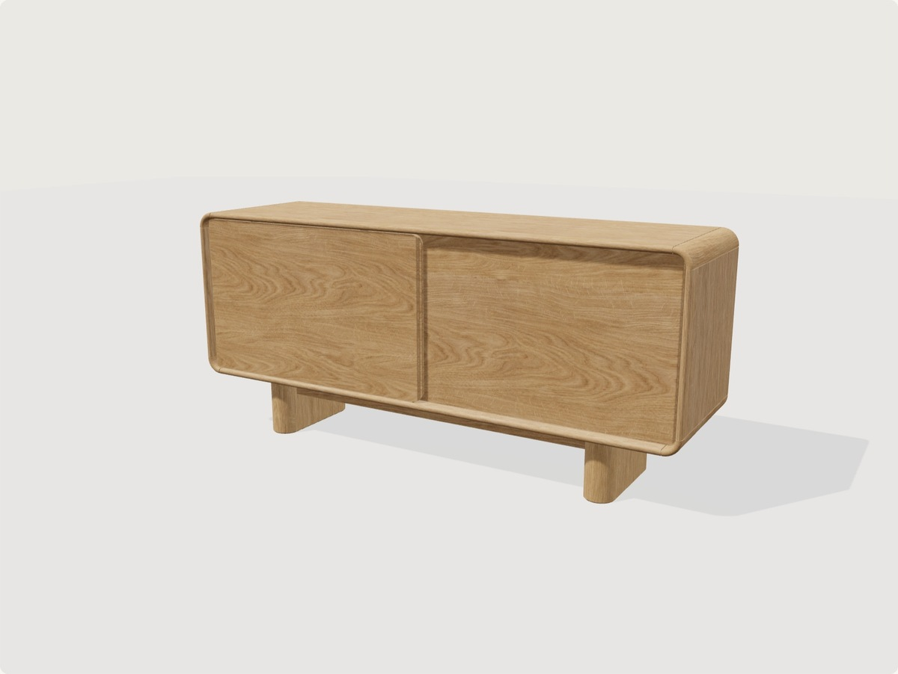

SO—MASS
MODEL STÜDYOSU
Oda planlayıcı ↗
Model hazırlanıyor…

Bu tarayıcıda etkileşimli 3B açılamadı. Modelin önizlemesi gösteriliyor.
Perspektif
Önden
Yandan
Üstten
Sığdır ⤢
Natürel Meşe
160 × 45 × 72,2 cm · Taslak